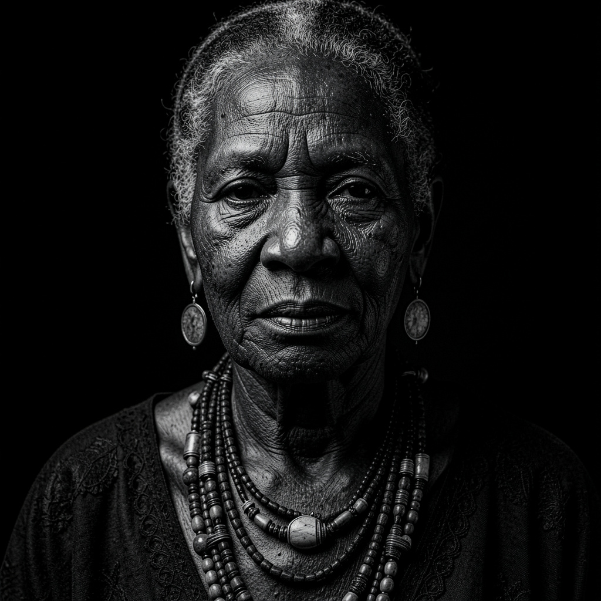

Bridging 5,000 years of Sahelian medicinal wisdom with modern clinical data.
Invoke the ArchiveInteractive dialogue with ancestral knowledge

Digital Twin Interface
Oral history retrieval system
Scientific validation & molecular profiling
Searchable repository of traditional Sahelian health knowledge — each entry linked to community source, clinical evidence, and sovereignty metadata.
Data ownership · Community royalties · Encrypted provenance
Recorded with Elder Amina Yusuf
12 March 2025 · Dala District, Kano
Directed to Dala District Educational Trust
Hash: 0x7f3a9...c2e1
Immutable · Community-governed · AI-audited
“The bigger picture is to restore lost languages, to capture our actual languages, culture, heritages, so the world understands who we are, where we’re coming from, without misrepresenting it”
- Malik Afegbua
The Heritage Health Library is the clinical-grade survival layer for the African story. Ready for deployment.
Start a conversation